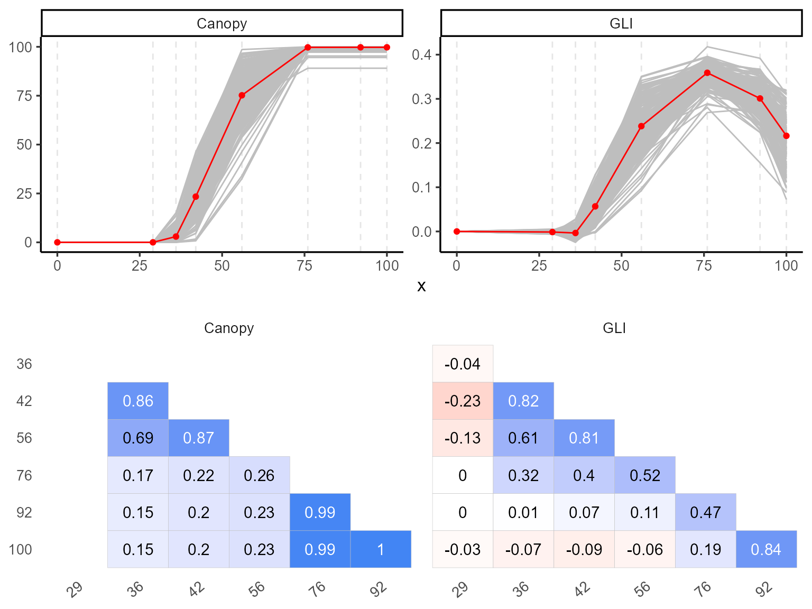
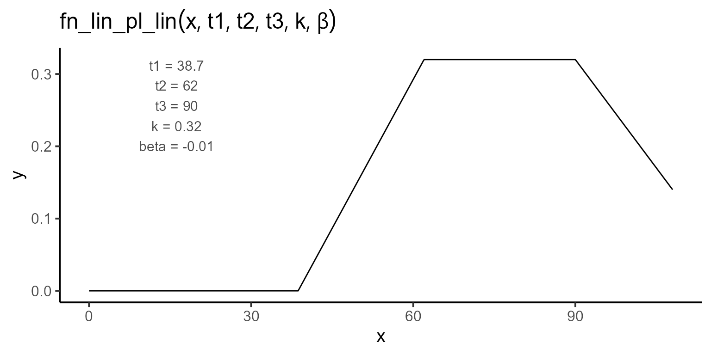

This vignette demonstrates how to use the flexFitR package to model a vegetation index derived from UAV imagery. We will focus on the Green Leaf Index (GLI) to estimate three key events in plant development:
- t1: The day of plant emergence.
- t2: The number of days it takes to reach canopy closure.
- t3: The number of days it takes to onset of senescence.
The data presented here are part of Professor Jeff Endelman’s breeding program, specifically for a partially replicated experiment. The UAV images were collected in 2020 and processed in 2024.
1. Exploring data
We begin by exploring the data using the explorer
function. This function provides basic statistical summaries and
visualizations, helping us understand the temporal evolution of each
plot and the correlations among the variables.
names(explorer)
#> [1] "summ_vars" "summ_metadata" "locals_min_max" "dt_long"
#> [5] "metadata" "x_var"
p1 <- plot(explorer, type = "evolution", return_gg = TRUE, add_avg = TRUE)
p2 <- plot(explorer, type = "x_by_var", return_gg = TRUE)
ggarrange(p1, p2, nrow = 2)
| var | x | Min | Mean | Median | Max | SD | CV | n | miss | miss% | neg% |
|---|---|---|---|---|---|---|---|---|---|---|---|
| GLI_2 | 29 | -0.01 | 0.00 | 0.00 | 0.01 | 0.00 | -2.01 | 196 | 0 | 0 | 0.69 |
| GLI_2 | 36 | -0.02 | 0.00 | 0.00 | 0.03 | 0.01 | -2.90 | 196 | 0 | 0 | 0.69 |
| GLI_2 | 42 | 0.00 | 0.06 | 0.05 | 0.13 | 0.03 | 0.46 | 196 | 0 | 0 | 0.02 |
| GLI_2 | 56 | 0.09 | 0.22 | 0.21 | 0.32 | 0.04 | 0.19 | 196 | 0 | 0 | 0.00 |
| GLI_2 | 76 | 0.27 | 0.36 | 0.36 | 0.42 | 0.02 | 0.06 | 196 | 0 | 0 | 0.00 |
| GLI_2 | 92 | 0.16 | 0.30 | 0.31 | 0.39 | 0.03 | 0.11 | 196 | 0 | 0 | 0.00 |
| GLI_2 | 100 | 0.07 | 0.22 | 0.22 | 0.32 | 0.05 | 0.23 | 196 | 0 | 0 | 0.00 |
| GLI_2 | 108 | 0.02 | 0.17 | 0.17 | 0.29 | 0.05 | 0.32 | 196 | 0 | 0 | 0.00 |
2. Expectation function
After exploring the data, we define the expectation function. In this case, we utilize a linear-plateau-linear function characterized by five parameters: t1, t2, t3, k, and \(\beta\). The function can be expressed mathematically as follows:
\[\begin{equation} f(t; t_1, t_2, t_3, k, \beta) = \begin{cases} 0 & \text{if } t < t_1 \\ \dfrac{k}{t_2 - t_1} \cdot (t - t_1) & \text{if } t_1 \leq t \leq t_2 \\ k & \text{if } t_2 \leq t \leq t_3 \\ k + \beta \cdot (t - t_3) & \text{if } t > t_3 \end{cases} \end{equation}\]

3. Fitting Models
To fit the model, we use the modeler function. Here:
- x specifies the days after planting (DAP),
- y the GLI_2 variable that we aim to model.
- grp Allows for group analysis, enabling us to analyze multiple plots.
In this vignette, we will fit the model for plots 195 and 40 as a
subset, out of a total of 196 plots. We will define the
linear-plateau-linear function fn_lin_pl_lin and set
initial values for the parameters. Additionally, we can include a zero
value in the time series if needed.
mod_1 <- dt_potato_20 |>
modeler(
x = DAP,
y = GLI_2,
grp = Plot,
fn = "fn_lin_pl_lin",
parameters = c(t1 = 38.7, t2 = 62, t3 = 90, k = 0.32, beta = -0.01),
subset = c(195, 40),
options = list(add_zero = TRUE)
)After fitting, we can inspect the model summary and visualize the fit using the plot function:
kable(mod_1$param)| uid | t1 | t2 | t3 | k | beta | sse |
|---|---|---|---|---|---|---|
| 40 | 36.88016 | 66.41594 | 79.85413 | 0.3691396 | -0.0105694 | 0.0006928 |
| 195 | 39.59062 | 68.27877 | 93.33638 | 0.3228831 | -0.0100491 | 0.0001490 |
3.1. Extracting model coefficients and uncertainty measures
Once the model is fitted, we can extract essential statistical information, including coefficients, standard errors, confidence intervals, and the variance-covariance matrix for each plot. These metrics help us evaluate the reliability of the parameter estimates and assess the uncertainty around them.
The functions coef, confint, and
vcov are used as follows:
- coef: Extracts the estimated coefficients for each group.
- confint: Provides the confidence intervals for the parameter estimates.
- vcov: Returns the variance-covariance matrix, which can be used to understand the relationships between the estimates and their variability.
coef(mod_1)
#> # A tibble: 10 × 6
#> uid coefficient solution std.error `t value` `Pr(>|t|)`
#> <dbl> <chr> <dbl> <dbl> <dbl> <dbl>
#> 1 40 t1 36.9 1.49 24.7 0.0000159
#> 2 40 t2 66.4 2.26 29.4 0.00000797
#> 3 40 t3 79.9 2.64 30.2 0.00000716
#> 4 40 k 0.369 0.0132 28.0 0.00000963
#> 5 40 beta -0.0106 0.00116 -9.09 0.000813
#> 6 195 t1 39.6 0.642 61.6 0.000000415
#> 7 195 t2 68.3 1.18 57.7 0.000000540
#> 8 195 t3 93.3 1.28 73.0 0.000000211
#> 9 195 k 0.323 0.00417 77.4 0.000000167
#> 10 195 beta -0.0100 0.00110 -9.13 0.000800
confint(mod_1)
#> # A tibble: 10 × 6
#> uid coefficient solution std.error ci_lower ci_upper
#> <dbl> <chr> <dbl> <dbl> <dbl> <dbl>
#> 1 40 t1 36.9 1.49 32.7 41.0
#> 2 40 t2 66.4 2.26 60.1 72.7
#> 3 40 t3 79.9 2.64 72.5 87.2
#> 4 40 k 0.369 0.0132 0.333 0.406
#> 5 40 beta -0.0106 0.00116 -0.0138 -0.00734
#> 6 195 t1 39.6 0.642 37.8 41.4
#> 7 195 t2 68.3 1.18 65.0 71.6
#> 8 195 t3 93.3 1.28 89.8 96.9
#> 9 195 k 0.323 0.00417 0.311 0.334
#> 10 195 beta -0.0100 0.00110 -0.0131 -0.00699
vcov(mod_1)
#> $`40`
#> t1 t2 t3 k beta
#> t1 2.225220e+00 -1.842123e+00 7.504853e-05 -7.920036e-07 -5.438244e-11
#> t2 -1.842123e+00 5.103540e+00 -1.314304e+00 1.387014e-02 9.523845e-07
#> t3 7.504853e-05 -1.314304e+00 6.988888e+00 -1.642546e-02 -2.580093e-03
#> k -7.920036e-07 1.387014e-02 -1.642546e-02 1.733414e-04 1.190238e-08
#> beta -5.438244e-11 9.523845e-07 -2.580093e-03 1.190238e-08 1.353033e-06
#>
#> $`195`
#> t1 t2 t3 k beta
#> t1 4.125816e-01 -0.3971638781 2.496490e-07 -3.724881e-09 1.004366e-10
#> t2 -3.971639e-01 1.3995439417 -1.036911e-01 1.547120e-03 -4.171610e-05
#> t3 2.496490e-07 -0.1036910914 1.632896e+00 -1.167033e-03 -1.250043e-03
#> k -3.724881e-09 0.0015471202 -1.167033e-03 1.741269e-05 -4.695107e-07
#> beta 1.004366e-10 -0.0000417161 -1.250043e-03 -4.695107e-07 1.212576e-064. Adding constrains to the optimization
To impose constraints on the optimization process, we can modify the expectation function. In this particular case, if we want to ensure that t3 is greater than or equal to t2, we can reformulate the function, introducing dt as the difference between t3 and t2:
\[\begin{equation} f(t; t_1, t_2, dt, k, \beta) = \begin{cases} 0 & \text{if } t < t_1 \\ \dfrac{k}{t_2 - t_1} \cdot (t - t_1) & \text{if } t_1 \leq t \leq t_2 \\ k & \text{if } t_2 \leq t \leq (t_2 + dt) \\ k + \beta \cdot (t - (t_2 + dt)) & \text{if } t > (t_2 + dt) \end{cases} \end{equation}\]
We can then add constraints in the modeler function using the lower and upper arguments, where the coefficient dt can vary from 0 to infinity, and the slope (\(\beta\)) must be non-positive.
mod_2 <- dt_potato_20 |>
modeler(
x = DAP,
y = GLI_2,
grp = Plot,
fn = "fn_lin_pl_lin2",
parameters = c(t1 = 38.7, t2 = 62, dt = 28, k = 0.32, beta = -0.01),
lower = c(-Inf, -Inf, 0, -Inf, -Inf),
upper = c(Inf, Inf, Inf, Inf, 0),
method = c("nlminb", "L-BFGS-B"),
subset = c(195, 40),
options = list(add_zero = TRUE)
)
kable(mod_2$param)| uid | t1 | t2 | dt | k | beta | sse |
|---|---|---|---|---|---|---|
| 40 | 36.88016 | 66.41594 | 13.43819 | 0.3691396 | -0.0105694 | 0.0006928 |
| 195 | 39.59062 | 68.27877 | 25.05761 | 0.3228832 | -0.0100491 | 0.0001490 |
coef(mod_1)
#> # A tibble: 10 × 6
#> uid coefficient solution std.error `t value` `Pr(>|t|)`
#> <dbl> <chr> <dbl> <dbl> <dbl> <dbl>
#> 1 40 t1 36.9 1.49 24.7 0.0000159
#> 2 40 t2 66.4 2.26 29.4 0.00000797
#> 3 40 t3 79.9 2.64 30.2 0.00000716
#> 4 40 k 0.369 0.0132 28.0 0.00000963
#> 5 40 beta -0.0106 0.00116 -9.09 0.000813
#> 6 195 t1 39.6 0.642 61.6 0.000000415
#> 7 195 t2 68.3 1.18 57.7 0.000000540
#> 8 195 t3 93.3 1.28 73.0 0.000000211
#> 9 195 k 0.323 0.00417 77.4 0.000000167
#> 10 195 beta -0.0100 0.00110 -9.13 0.000800
confint(mod_1)
#> # A tibble: 10 × 6
#> uid coefficient solution std.error ci_lower ci_upper
#> <dbl> <chr> <dbl> <dbl> <dbl> <dbl>
#> 1 40 t1 36.9 1.49 32.7 41.0
#> 2 40 t2 66.4 2.26 60.1 72.7
#> 3 40 t3 79.9 2.64 72.5 87.2
#> 4 40 k 0.369 0.0132 0.333 0.406
#> 5 40 beta -0.0106 0.00116 -0.0138 -0.00734
#> 6 195 t1 39.6 0.642 37.8 41.4
#> 7 195 t2 68.3 1.18 65.0 71.6
#> 8 195 t3 93.3 1.28 89.8 96.9
#> 9 195 k 0.323 0.00417 0.311 0.334
#> 10 195 beta -0.0100 0.00110 -0.0131 -0.00699
vcov(mod_1)
#> $`40`
#> t1 t2 t3 k beta
#> t1 2.225220e+00 -1.842123e+00 7.504853e-05 -7.920036e-07 -5.438244e-11
#> t2 -1.842123e+00 5.103540e+00 -1.314304e+00 1.387014e-02 9.523845e-07
#> t3 7.504853e-05 -1.314304e+00 6.988888e+00 -1.642546e-02 -2.580093e-03
#> k -7.920036e-07 1.387014e-02 -1.642546e-02 1.733414e-04 1.190238e-08
#> beta -5.438244e-11 9.523845e-07 -2.580093e-03 1.190238e-08 1.353033e-06
#>
#> $`195`
#> t1 t2 t3 k beta
#> t1 4.125816e-01 -0.3971638781 2.496490e-07 -3.724881e-09 1.004366e-10
#> t2 -3.971639e-01 1.3995439417 -1.036911e-01 1.547120e-03 -4.171610e-05
#> t3 2.496490e-07 -0.1036910914 1.632896e+00 -1.167033e-03 -1.250043e-03
#> k -3.724881e-09 0.0015471202 -1.167033e-03 1.741269e-05 -4.695107e-07
#> beta 1.004366e-10 -0.0000417161 -1.250043e-03 -4.695107e-07 1.212576e-06